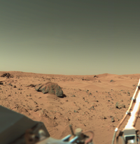

Marte è il quarto pianeta del sistema solare in ordine di distanza dal Sole, è visibile ad occhio nudo ed è l'ultimo dei pianeti di tipo terrestre dopo Mercurio, Venere e la Terra. Chiamato il Pianeta rosso a causa del suo colore caratteristico dovuto alle grandi quantità di ossido di ferro che lo ricoprono, Marte prende il nome dall'omonima divinità della mitologia romana e il suo simbolo astronomico è la rappresentazione stilizzata dello scudo e della lancia del dio.
 Pur presentando temperature medie superficiali piuttosto basse (tra −120 °C e −14 °C), il pianeta è il più simile alla Terra tra quelli del sistema solare. Le sue dimensioni sono intermedie fra quelle del nostro pianeta e della Luna, presenta un'inclinazione dell'asse di rotazione e durata del giorno simili a quelle terrestri. La sua superficie presenta formazioni vulcaniche, valli, calotte polari e deserti sabbiosi, e formazioni geologiche che vi suggeriscono la presenza di un'idrosfera in un lontano passato. La superficie del pianeta appare fortemente craterizzata, a causa della quasi totale assenza di agenti erosivi (attività geologica, atmosferica e idrosferica, i principali) e dalla totale assenza di attività tettonica delle placche capace di formare e poi modellare le strutture tettoniche. La bassissima densità dell'atmosfera non è poi in grado di consumare buona parte dei meteoriti, che pertanto raggiungono il suolo con maggior frequenza che non sulla Terra. Fra le formazioni geologiche più notevoli di Marte si segnalano l'Olympus Mons o monte Olimpo, il vulcano più grande del sistema solare (alto 27 km); le Valles Marineris, un lungo canyon notevolmente più esteso di quelli terrestri e un enorme cratere sull'emisfero boreale ampio circa 40% dell'intera superficie marziana.
Pur presentando temperature medie superficiali piuttosto basse (tra −120 °C e −14 °C), il pianeta è il più simile alla Terra tra quelli del sistema solare. Le sue dimensioni sono intermedie fra quelle del nostro pianeta e della Luna, presenta un'inclinazione dell'asse di rotazione e durata del giorno simili a quelle terrestri. La sua superficie presenta formazioni vulcaniche, valli, calotte polari e deserti sabbiosi, e formazioni geologiche che vi suggeriscono la presenza di un'idrosfera in un lontano passato. La superficie del pianeta appare fortemente craterizzata, a causa della quasi totale assenza di agenti erosivi (attività geologica, atmosferica e idrosferica, i principali) e dalla totale assenza di attività tettonica delle placche capace di formare e poi modellare le strutture tettoniche. La bassissima densità dell'atmosfera non è poi in grado di consumare buona parte dei meteoriti, che pertanto raggiungono il suolo con maggior frequenza che non sulla Terra. Fra le formazioni geologiche più notevoli di Marte si segnalano l'Olympus Mons o monte Olimpo, il vulcano più grande del sistema solare (alto 27 km); le Valles Marineris, un lungo canyon notevolmente più esteso di quelli terrestri e un enorme cratere sull'emisfero boreale ampio circa 40% dell'intera superficie marziana.
I due rover gemelli Spirit (MER-A) e Opportunity (MER-B), lanciati dalla NASA, raggiunsero il suolo marziano con successo nel gennaio 2004. Tra le scoperte principali si ha la prova definitiva dell'esistenza di acqua allo stato liquido nel passato, grazie al ritrovamento delle sue tracce in entrambi i punti di atterraggio. I diavoli di sabbia e le forti correnti inoltre hanno allungato la vita dei rover grazie alla continua pulizia dei loro pannelli solari. Il 22 marzo 2010 si persero i contatti con Spirit, mentre Opportunity è invece, al 2017, ancora attivo.  Il 6 agosto 2012 atterrò su Marte il rover Curiosity, il maggiore per dimensioni e complessità tecnologica sviluppato dalla NASA, con l'obiettivo di investigare sulla passata e presente capacità del pianeta di sostenere la vita. La sonda ha trovato acqua, zolfo e sostanze clorurate nei primi campioni di suolo marziano, a testimonianza di una chimica complessa. La NASA ha precisato che il risultato è solo la conferma che gli strumenti della sonda hanno funzionato alla perfezione, e che sono stati trovati indizi di composti organici, ma che non è possibile escludere che questi possano essere stati trasportati su Marte dalla stessa Curiosity. La Mars Orbiter Mission, nota anche con la denominazione informale di Mangalyaan, fu la prima missione per l'esplorazione di Marte dell'Indian Space Research Organisation (ISRO), il cui vettore fu lanciato il 3 novembre 2013 per raggiungere l'orbita marziana il 24 settembre 2014. La missione fu ideata per sviluppare le tecnologie necessarie per la progettazione, programmazione, gestione e controllo di una missione interplanetaria. L'agenzia spaziale indiana fu dunque la quarta a raggiungere Marte, dopo la russa RKA, la statunitense NASA e l'europea ESA. La sonda MAVEN fu lanciata con successo il 18 novembre 2013 con un razzo vettore Atlas V dalla Cape Canaveral Air Force Station, per inserirsi in un'orbita ellittica attorno a Marte il 16 settembre del 2014, ad un'altezza compresa tra 90 miglia (145 km) e 3 870 miglia (6 228 km) dalla superficie. Il 14 marzo 2016 l'ESA ha lanciato il Trace Gas Orbiter (TGO) e il Lander Schiaparelli, parte della missione ExoMars, un progetto in cui l'Italia risulta essere il primo finanziatore e italiana è anche molta della tecnologia di bordo. Il Lander Schiaparelli ha tentato, senza successo, di atterrare il 16 ottobre dello stesso anno.
© Copyright "Astronomy", 2018